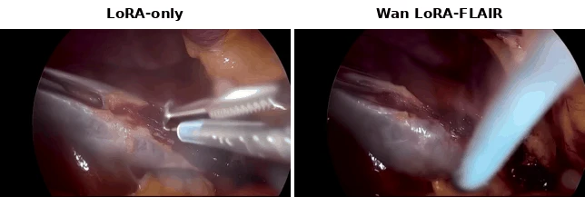
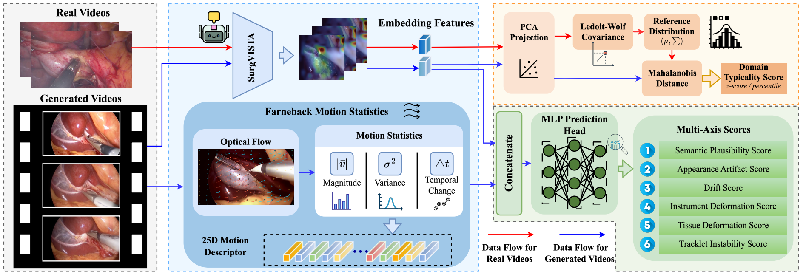

Wan 2.1
14.3%
lower FVD
HKUST / ARXIV 2026
Surgical video generation needs better motion, without extra masks or trajectories.
FLAIR learns motion from optical flow and generates from text alone.



Generated surgical videos. Select a backbone to compare instrument motion and tissue consistency.
Text in. Surgical video out.No masks, trajectories, or reference videos at inference.
Motion learned from real video.Optical flow provides action supervision during training.
One idea, three backbones.Action adapters work with domain-adapted video generators.
01 / THE METHOD
Learn an action prior, predict it from a prompt, and inject it into the video generator.

1LearnCompress optical flow into latent action sequences.
2PredictMap the text prompt to a motion-aware action prior.
3InjectGuide generation with global and temporal action signals.
02 / THE RESULTS
Lower FVD with LoRA-FLAIR on all three backbones, evaluated on 200 surgical prompts.
Wan 2.1
14.3%
lower FVD
HunyuanVideo 1.5
46.0%
lower FVD
CogVideoX-2B
10.2%
lower FVD
Relative FVD reduction vs. LoRA-only, calculated from Table 1. Lower is better; each pair is scaled to its own baseline.

Highlighted regions track instrument and tissue appearance over time.
03 / DATA & EVALUATION
Action-aware training data and a surgical evaluation suite support the generation framework.
THE DATASET
Action-centric clips paired with structured surgical captions.
32,293retained clips
11source datasets
4surgical domains

THE EVALUATION
Six artifact axes assess semantics, appearance, motion, instruments, tissue, and tracking, alongside a separate domain score.
4 surgeons · 90 generated laparoscopic videos

REFERENCE
@misc{qin2026flair,
title={Beyond Masks and Trajectories: Flow-Guided Latent Action
Injection for Stable Surgical Video Generation},
author={Tsz-Yui Qin and Siyu Zhou and Chi-Keung Tang
and Yuxiang Nie and Shu Yang},
year={2026},
eprint={2610.09800},
archivePrefix={arXiv},
primaryClass={cs.CV},
url={https://arxiv.org/abs/2610.09800}
}